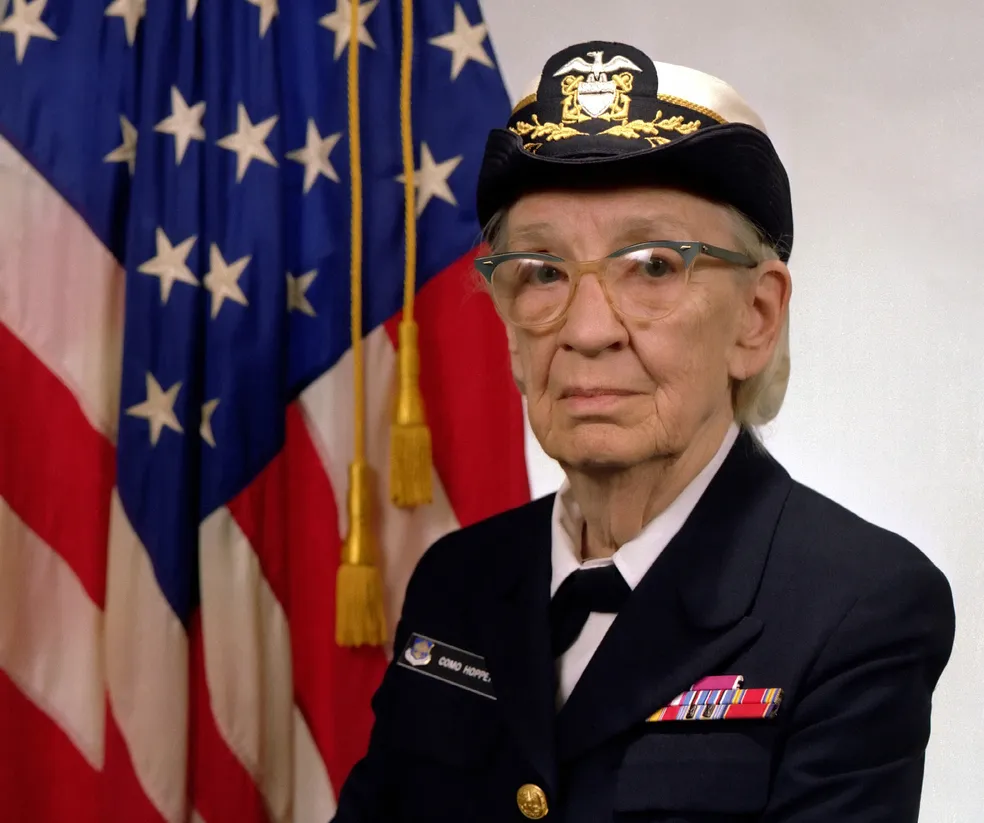

Um dos maiores legados de Grace Hopper foi a crença de que a programação deveria ser acessível. Ela criou o primeiro compilador, o A-0, e mais tarde liderou o desenvolvimento do COBOL (Common Business-Oriented Language). Graças a ela, os computadores passaram a entender palavras em inglês em vez de apenas números complexos, revolucionando o mundo dos negócios.

O Primeiro "Bug"
Grace não apenas inventou linguagens, ela também deu nome a problemas. Ao encontrar uma mariposa física travando o computador Mark II, ela a removeu e chamou o processo de "debugging" (depuração). Hoje, todo programador no mundo usa esse termo graças a esse momento icônico na história da computação.
Incentivo às Novas Gerações
Até o fim de sua vida, "Amazing Grace" (como era chamada) dedicou-se a ensinar jovens e a dar palestras. Ela dizia que a frase mais perigosa da língua era: "Sempre fizemos assim". Por seu impacto, ela recebeu postumamente a Medalha Presidencial da Liberdade, a maior honraria civil dos Estados Unidos.
Grace Hopper Hoje
Atualmente, o maior evento mundial para mulheres na tecnologia leva seu nome: Grace Hopper Celebration of Women in Computing. Seu legado vive em cada linha de código escrita em linguagens modernas e na presença cada vez maior de mulheres na ciência e tecnologia.